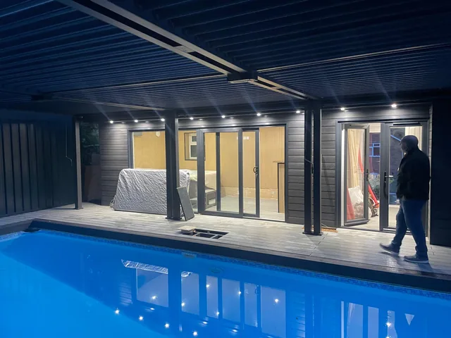
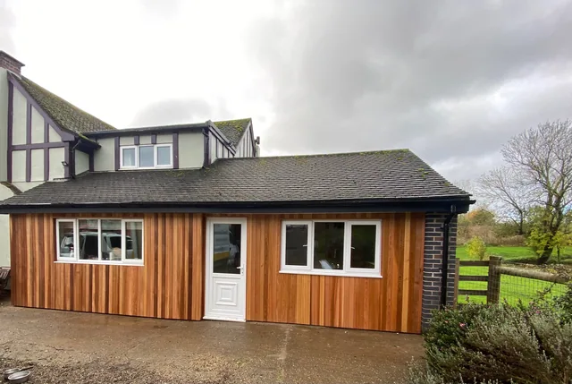
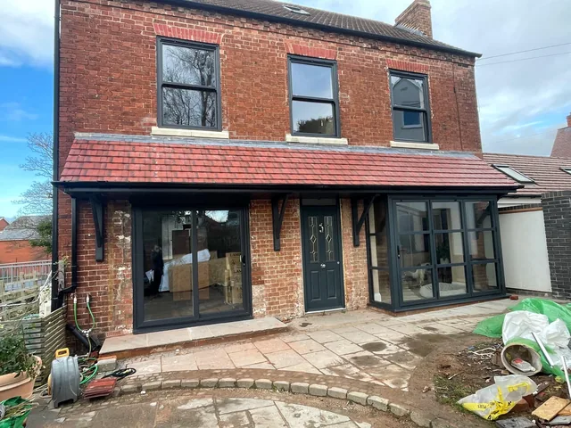
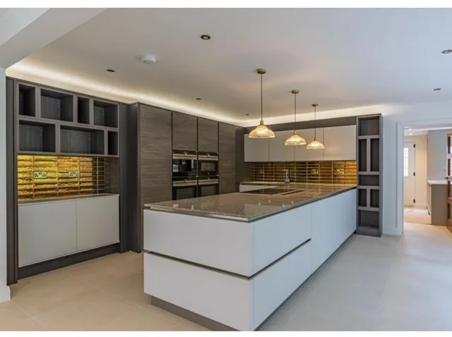
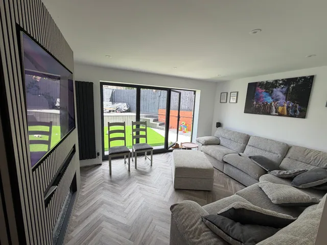
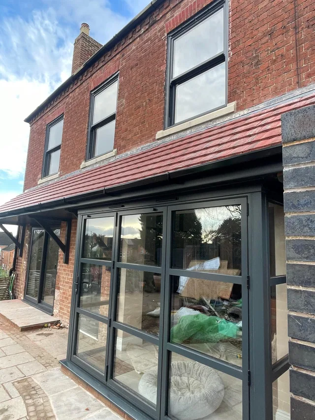
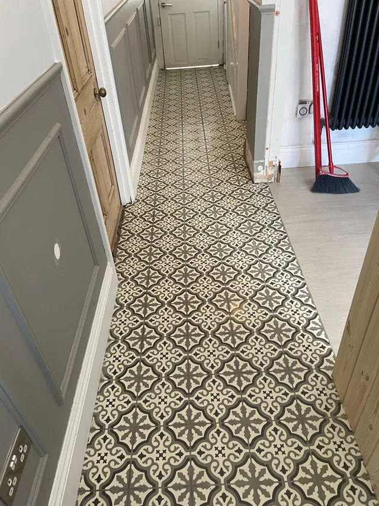
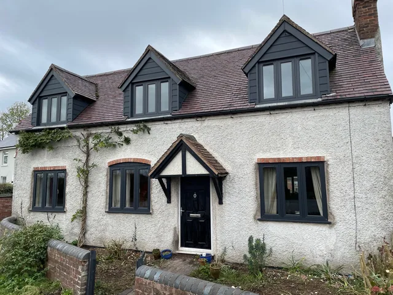
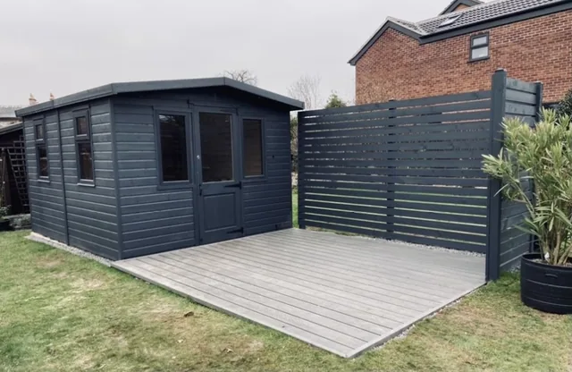

The old site had sixteen photographs and not one caption. These say what the job was, what was involved and roughly where it is.
Locations are given at county level for now. If you'd like the town on a particular job, ask — some clients would rather we didn't.

Pool house & enclosure
A scorched lawn and an open-air pool became an enclosed, clad and lit pool house with an aluminium louvred roof.
Worcestershire
Vaulted kitchen, exposed brick
Ceiling opened to the rafters, chimney breast stripped back to brick, navy shaker units and a full island run.
Worcestershire
Timber-framed barn
New glazing set into a period frame, with a stone terrace laid across the front elevation.
Worcestershire
Crittall screen & roll-top
Steel-framed shower screen, roll-top bath and a patterned tile floor under a sloped ceiling.
Worcestershire
Cedar-clad garage & annex
Full cedar elevation under a slate roof, white windows, open countryside behind it.
Worcestershire
Porcelain patio & raised deck
Porcelain throughout, composite steps up to a raised deck, a level lawn and a channel drain along the house.
Worcestershire
Timber footbridge
Built and set over a pond with a full handrail — the kind of job that doesn't fit a category.
Worcestershire
Victorian red brick, rebuilt
New anthracite windows throughout, a rebuilt porch and a new tiled roof over the front bay.
Worcestershire
Handleless gloss kitchen
A run of full-height units and an island, handleless throughout, in a knocked-through ground floor.
Worcestershire
Slatted wall & herringbone floor
Full-height slatted media wall, herringbone flooring and sliding doors out to the garden.
Worcestershire
Cedar garden room & pergola
Cedar-clad room with an aluminium pergola running over the patio in front of it.
Worcestershire
Garden room with roller door
Cedar and anthracite, with an integrated electric roller door for the half used as storage.
Worcestershire
Block-paved driveway
Full excavation, sub-base and block paving with a contrasting border and a channel drain to the road.
Worcestershire
Rear extension, anthracite glazing
Single-storey rear extension in matching brick, anthracite aluminium windows and a new tiled roof.
Worcestershire
Encaustic hallway
Patterned floor tiles the length of the hall, with panelled walls and a new run of skirting.
Worcestershire
Oak-clad porch
Oak cladding and a slate-tiled roof over a new composite door on a painted brick cottage.
Worcestershire
Cottage dormers & windows
Three dark dormers and new anthracite windows throughout a white rendered cottage.
Worcestershire
Summerhouse & composite deck
Charcoal summerhouse set on a composite deck behind a slatted screen.
Worcestershire
Panelled hallway
Wainscot panelling and a new door in a sage-grey hall, made and fitted on site.
Worcestershire
Porcelain side return
Porcelain path running the length of a side return with a slate-chip margin and a crisp cut line.
Worcestershire